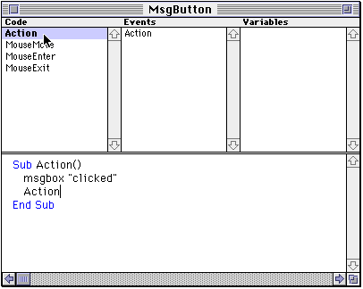

The Back Page
For those of you who have programmed in RB (or XB as it was then) for about as long as anyone else, you may enjoy this...
Believe it or not, the old CrossBasic web site still exists (www.frii.com/~abarry/cb_index.html). Though it only has a pointer to the new CrossBasic page (which, as it explains, is now made in cooperation with FYI Software), the online documentation still exists, and there may be even more, I'm not sure. Here's what I've found...
The manual is contained in the files ../~abarry/cb_chapter2.html to ../~abarry/cb_chapter20.html. Surprisingly enough, most of it is still true today, but it still goes to show how much the documentation has improved. However, I believe this picture makes it all worth it:

For those of you who haven't seen it before, this was the CrossBasic class editor two revisions ago. After this came a version with three popupmenus at the bottom (as opposed to three listboxes). I hated that setup. Next came the one that still exists today, which I don't particularly like. Note to Andrew: GO BACK TO THE OLD EDITOR! It was fast, It wasn't flashy, and it certainly wasn't a pain to use like the current one is. ARGH!
Yes, I realize this section was dumb. Oh well.